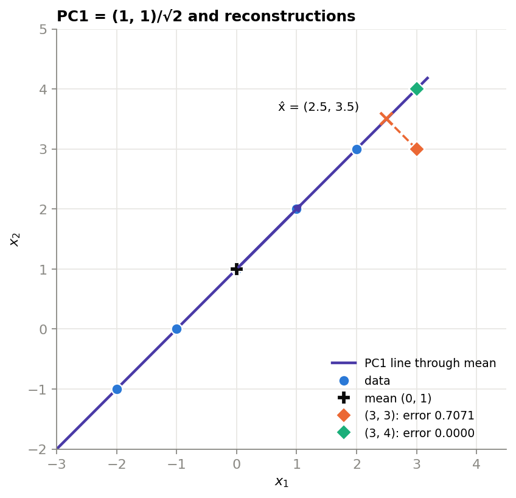
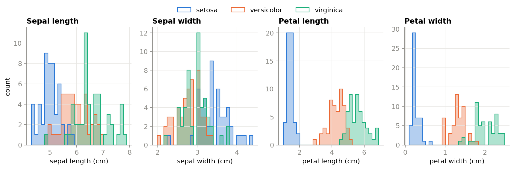
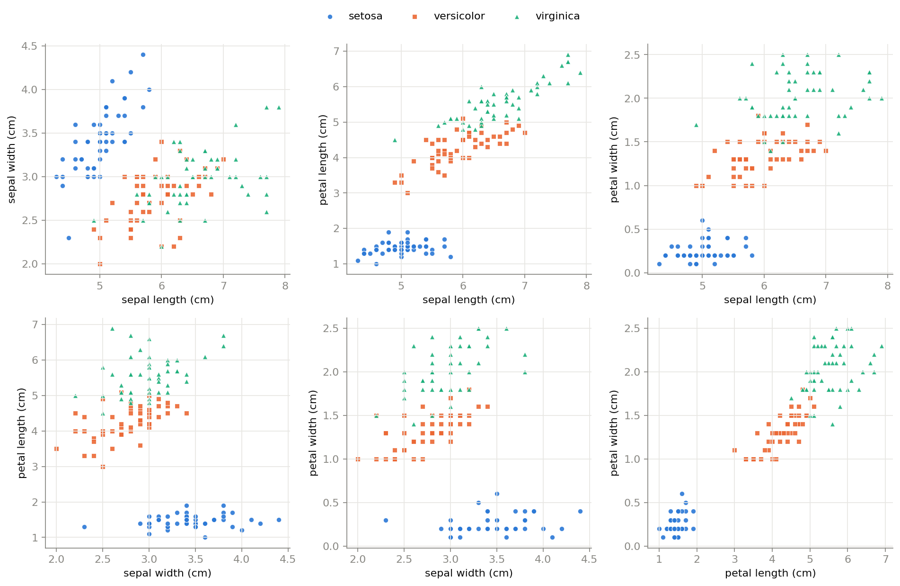
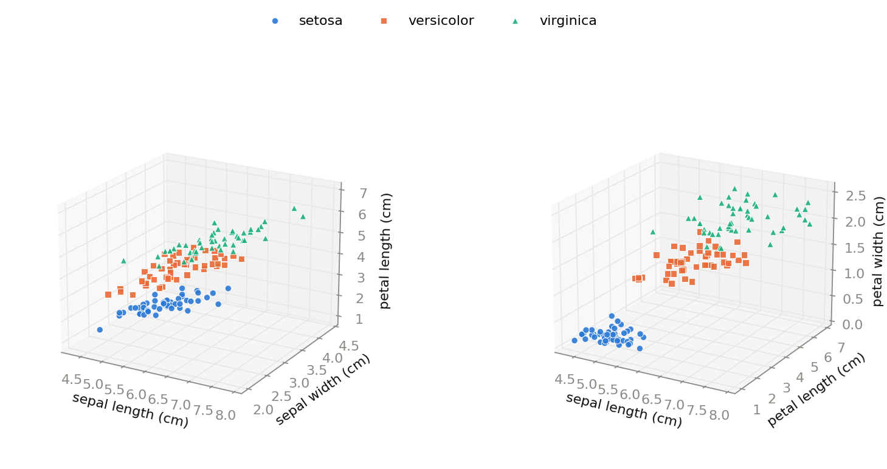
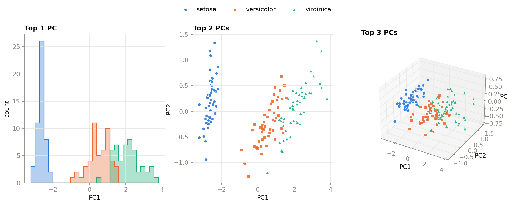
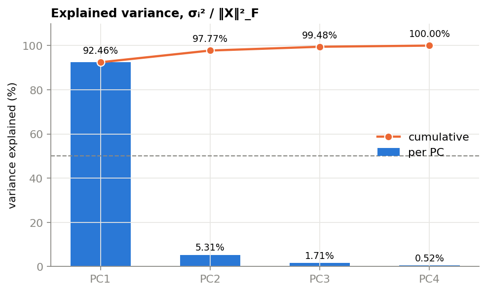
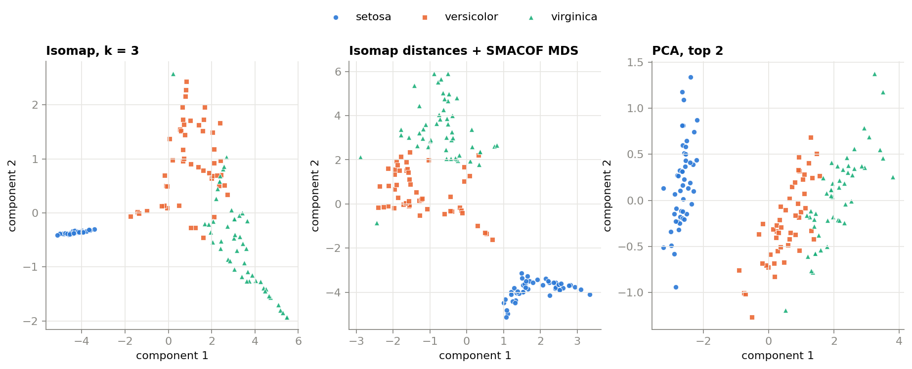

Coursework / SYDE 572, Pattern Recognition / Assignment 3
Assignment 3: PCA
PCA by hand on a five-point dataset, then marginal views, PCA, explained variance and Isomap on the Iris dataset (150 flowers, 4 measurements in cm, 3 species).
Part 1: PCA by hand
Centre. The mean is \(\boldsymbol\mu = (0, 1)\), so the centred points are \((-2,-2), (-1,-1), (0,0), (1,1), (2,2)\).
Covariance and eigenvectors. Each centred point has \(x_1 = x_2\), and \(\sum x_1^2 = 10\):
\[ S = \frac{1}{5}\sum_n \tilde{\mathbf{x}}_n\tilde{\mathbf{x}}_n^\top = \begin{pmatrix} 2 & 2 \\ 2 & 2 \end{pmatrix}, \qquad \det(S - \lambda I) = \lambda(\lambda - 4) = 0 \;\Rightarrow\; \lambda_1 = 4,\ \lambda_2 = 0. \]For \(\lambda_1 = 4\): \(-2w_1 + 2w_2 = 0\), so \(w_1 = w_2\).
1. First principal component
\[ \mathbf{w}_1 = \tfrac{1}{\sqrt{2}}(1, 1) \approx (0.7071, 0.7071) \]All five points lie on the line \(x_2 = x_1 + 1\), so this direction has zero orthogonal distance to every point and captures 100% of the variance (\(\lambda_2 = 0\)).
2. Reconstruction error of (3, 3)
\[ \tilde{\mathbf{x}} = (3,3) - (0,1) = (3, 2), \qquad z = \mathbf{w}_1^\top\tilde{\mathbf{x}} = \tfrac{3 + 2}{\sqrt{2}} = 3.5355 \] \[ \hat{\mathbf{x}} = \boldsymbol\mu + z\,\mathbf{w}_1 = (0,1) + (2.5, 2.5) = (2.5, 3.5) \] \[ \lVert \mathbf{x} - \hat{\mathbf{x}} \rVert = \lVert (0.5, -0.5) \rVert = \sqrt{0.5} = \tfrac{1}{\sqrt{2}} \approx 0.7071 \]3. Reconstruction error of (3, 4)
\[ \tilde{\mathbf{x}} = (3, 3), \qquad z = \tfrac{6}{\sqrt{2}} = 4.2426, \qquad \hat{\mathbf{x}} = (0,1) + (3, 3) = (3, 4) \] \[ \lVert \mathbf{x} - \hat{\mathbf{x}} \rVert = 0 \](3, 4) lies on the PC1 line, so it is reconstructed exactly.

Part 2: Data visualization



- Petal length or petal width alone separates setosa perfectly: setosa petals are at most 1.9 cm long and 0.6 cm wide; the other species start at 3.0 cm and 1.0 cm.
- Petal length vs petal width gives the best clusters: three groups, with only a small versicolor/virginica overlap. The best single cut on petal width separates those two at 94% accuracy (petal length 93%).
- Sepal features separate poorly. Sepal width alone overlaps all three species; sepal length vs width isolates setosa but mixes the other two (best cut 73%).
- Adding a third feature to the petal pair adds little; the petal measurements carry most of the class information.
Part 3: PCA
sklearn.decomposition.PCA on the raw measurements (all in cm, so not standardized). The data mean is (5.843, 3.057, 3.758, 1.199).
| Axis | Sepal length | Sepal width | Petal length | Petal width | Variance |
|---|---|---|---|---|---|
| PC1 | 0.3614 | −0.0845 | 0.8567 | 0.3583 | 4.2282 |
| PC2 | 0.6566 | 0.7302 | −0.1734 | −0.0755 | 0.2427 |
| PC3 | −0.5820 | 0.5979 | 0.0762 | 0.5458 | 0.0782 |
| PC4 | 0.3155 | −0.3197 | −0.4798 | 0.7537 | 0.0238 |

PC1 is mostly petal length (0.86), plus sepal length and petal width: overall flower size. On PC1 alone, setosa is fully separated, and versicolor/virginica separate at 92% with one cut, about as well as the best single raw feature. PC2 is mostly sepal size (width and length). PC3 adds little visible separation.
Part 4: Data compression
For the centred data matrix \(X\) with singular values \(\sigma_i\), the total variance is proportional to the squared Frobenius norm, which splits across the PCs:
\[ \lVert X \rVert_F^2 = \sum_{n,j} \tilde{x}_{nj}^2 = \sum_i \sigma_i^2 = (N - 1)\sum_i \lambda_i. \]So the fraction explained by the top \(k\) PCs is \(\sum_{i \le k}\sigma_i^2 / \lVert X\rVert_F^2\), and the rest, \(\lVert X - X_k \rVert_F^2 = \sum_{i > k}\sigma_i^2\), is the reconstruction error.
| PC | \(\lambda_i\) | Explained | Cumulative |
|---|---|---|---|
| 1 | 4.2282 | 92.46% | 92.46% |
| 2 | 0.2427 | 5.31% | 97.77% |
| 3 | 0.0782 | 1.71% | 99.48% |
| 4 | 0.0238 | 0.52% | 100% |

- The two-dimensional representation explains 97.77% of the variance (\(4.4709 / 4.5730\)).
- One PC explains 50%: PC1 alone gives 92.46%.
Part 5: Non-linear components
sklearn.manifold.Isomap(n_neighbors=3, n_components=2). With 3 neighbours the graph splits into two pieces (setosa, and the other two species); sklearn joins them with the shortest edge between pieces. sklearn embeds the geodesic distances with classical MDS (an eigendecomposition). The assignment describes MDS fitted by gradient descent, so the middle panel also fits metric MDS (SMACOF, iterative stress minimization) to the same geodesic distances.

| 2-D embedding | Residual variance | 5-NN accuracy (10-fold CV) |
|---|---|---|
| PCA | 0.0032 | 96.0% |
| Isomap, k = 3 (classical MDS) | 0.0161 | 91.3% |
| Isomap distances, SMACOF | 0.0107 | 96.0% |
| Raw 4-D data (reference) | 96.7% |
Residual variance is \(1 - R^2\) between each method's target distances (Euclidean for PCA, geodesic for Isomap) and the 2-D embedding distances: lower means the 2-D map preserves the distances better.
PCA is preferable here.
- Compression: PCA keeps 97.8% of the variance in 2-D, its distance residual is 5× lower than Isomap's, and it gives an explicit linear map that can reconstruct points and project new flowers. Isomap has no reconstruction and no direct out-of-sample map.
- Classification: PCA's 2-D embedding classifies as well as the full 4-D data (96.0% vs 96.7%). Isomap with k = 3 is worse (91.3%): with so few neighbours, versicolor and virginica points are linked across the class boundary, and the long graph paths stretch the two classes into overlapping arms. With SMACOF it only matches PCA.
- Iris is close to linear (one PC carries 92% of the variance), so there is no curved manifold for Isomap to unfold. It also depends on k: accuracy rises from 91.3% at k = 3 to 96.0% at k = 20, where it approaches PCA.
Code
pca.py
import warnings
import numpy as np
from sklearn.datasets import load_iris
from sklearn.decomposition import PCA
from sklearn.manifold import MDS, Isomap
from sklearn.model_selection import cross_val_score
from sklearn.neighbors import KNeighborsClassifier
warnings.filterwarnings("ignore") # k = 3 graph is disconnected; sklearn joins the pieces
FEATURES = ["sepal length", "sepal width", "petal length", "petal width"]
def pca_by_hand(X, k=1):
mu = X.mean(0)
S = (X - mu).T @ (X - mu) / len(X)
vals, vecs = np.linalg.eigh(S)
order = np.argsort(vals)[::-1]
return mu, vals[order], vecs[:, order][:, :k]
def reconstruct(x, mu, W):
z = W.T @ (x - mu)
x_hat = mu + W @ z
return z, x_hat, np.linalg.norm(x - x_hat)
def iris():
data = load_iris()
return data.data, data.target, list(data.target_names)
def pca(X, k=4):
model = PCA(n_components=k).fit(X)
return model, model.transform(X)
def explained(X):
Xc = X - X.mean(0)
s = np.linalg.svd(Xc, compute_uv=False)
return s ** 2 / np.linalg.norm(Xc, "fro") ** 2
def isomap(X, k=3, d=2):
model = Isomap(n_neighbors=k, n_components=d).fit(X)
return model, model.embedding_
def isomap_smacof(iso, d=2):
# metric MDS by iterative stress minimization on the same geodesic distances
mds = MDS(n_components=d, dissimilarity="precomputed", n_init=4, random_state=0, normalized_stress="auto")
return mds.fit_transform(iso.dist_matrix_)
def residual_variance(D_high, Y):
D_low = np.linalg.norm(Y[:, None] - Y[None], axis=-1)
iu = np.triu_indices(len(Y), 1)
return 1 - np.corrcoef(D_high[iu], D_low[iu])[0, 1] ** 2
def knn_accuracy(Z, y, k=5):
return cross_val_score(KNeighborsClassifier(k), Z.reshape(len(Z), -1), y, cv=10).mean()
if __name__ == "__main__":
np.set_printoptions(precision=4, suppress=True)
P = np.array([[-2, -1], [-1, 0], [0, 1], [1, 2], [2, 3]], float)
mu, vals, W = pca_by_hand(P)
print("Part 1: mean", mu, "eigenvalues", vals, "PC1", W.ravel())
for x in ([3, 3], [3, 4]):
z, x_hat, err = reconstruct(np.array(x, float), mu, W)
print(f" {x}: z = {z[0]:.4f}, x_hat = {x_hat}, error = {err:.4f}")
X, y, names = iris()
model, Z = pca(X)
print("Part 3: mean", model.mean_)
for i, w in enumerate(model.components_):
print(f" PC{i + 1}", w, "variance", round(model.explained_variance_[i], 4))
r = explained(X)
print("Part 4: explained", r, "cumulative", np.cumsum(r))
print(" PCs for 50%:", int(np.searchsorted(np.cumsum(r), 0.5) + 1))
iso, Y = isomap(X)
D_geo = iso.dist_matrix_
D_euc = np.linalg.norm(X[:, None] - X[None], axis=-1)
for d in (1, 2):
Yd = isomap(X, d=d)[1]
print(f"Part 5: {d}-D isomap residual var {residual_variance(D_geo, Yd):.4f} "
f"pca residual var {residual_variance(D_euc, Z[:, :d]):.4f} "
f"5-NN acc isomap {knn_accuracy(Yd, y):.4f} pca {knn_accuracy(Z[:, :d], y):.4f}")
Ys = isomap_smacof(iso)
print(f" 2-D isomap+SMACOF residual var {residual_variance(D_geo, Ys):.4f} 5-NN acc {knn_accuracy(Ys, y):.4f}")
print(" raw 4-D 5-NN acc", round(knn_accuracy(X, y), 4))Download pca.py · plots.py (produces every figure on this page)